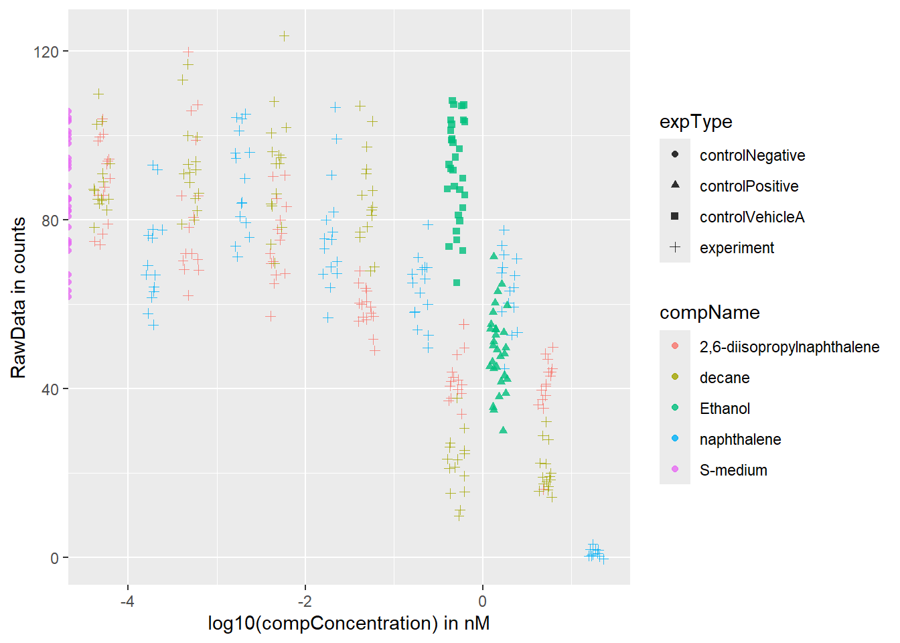

5 SQL
# Load required libraries
library(tidyr)
library(dplyr)
library(stringr)
library(DBI)
library(RPostgres)
library(readr)
library(dslabs)
library(ggplot2)
# Load in data
flu_data <- read_csv("~/Rachelle/flu_data.csv", skip = 11)
dengue_data <- read_csv("~/Rachelle/dengue_data.csv", skip = 11)
gapminder_data <- gapminder
# Make data tidy
flu_tidy <- pivot_longer(data = flu_data, cols = c(2:30), names_to = "Country", values_to = "Value")
flu_tidy <- flu_tidy %>% mutate(year = str_sub(Date, 1, 4)) %>% select(-Date)
dengue_tidy <- pivot_longer(data = dengue_data, cols = c(2:11), names_to = "Country", values_to = "Value")
dengue_tidy <- dengue_tidy %>% mutate(year = str_sub(Date, 1, 4)) %>% select(-Date)
gapminder_data <- as_tibble(gapminder_data)
gapminder_data <- gapminder_data %>%
rename(Year = year, Country = country) %>%
mutate(Year = as.character(Year)) # Convert Year to character# Save dataframes
write.csv(flu_tidy, "flu_tidy.csv")
write.csv(dengue_tidy, "dengue_tidy.csv")
write.csv(gapminder_data, "gapminder_tidy.csv")
saveRDS(flu_tidy, "flu_tidy.rds")
saveRDS(dengue_tidy, "dengue_tidy.rds")
saveRDS(gapminder_data, "gapminder_tidy.rds")
# Connect to database in PostgreSQL
con <- dbConnect(RPostgres::Postgres(),
dbname = "workflowsdb",
host="localhost",
port="5432",
user="postgres",
password="password")
dbWriteTable(con, "gapminder", gapminder_data)
dbWriteTable(con, "flu", flu_tidy)
dbWriteTable(con, "dengue", dengue_tidy)# Inspect contents of the tables
knitr::include_graphics("C:\\Users\\rache\\OneDrive\\Documenten\\Schermafbeelding 2024-08-18 230338.png")
knitr::include_graphics("C:\\Users\\rache\\OneDrive\\Documenten\\Schermafbeelding 2024-08-18 230429.png")
knitr::include_graphics("C:\\Users\\rache\\OneDrive\\Documenten\\Schermafbeelding 2024-08-18 230509.png")
# Join the tables together
flu_tidy <- flu_tidy %>% mutate(year = as.character(year))
dengue_tidy <- dengue_tidy %>% mutate(year = as.character(year))
flu_dengue <- full_join(flu_tidy, dengue_tidy, by = c("Country", "year"), suffix = c("_flu", "_dengue"))
# Rename 'year' to 'Year' in flu_dengue for consistency with gapminder_data
flu_dengue <- flu_dengue %>% rename(Year = year)
# Join with gapminder
flu_dengue_gapminder <- inner_join(flu_dengue, gapminder_data, by = c("Country", "Year"))
# Check the resulting dataframe
print(flu_dengue_gapminder)## # A tibble: 155,161 × 11
## Country Value_flu Year Value_dengue infant_mortality life_expectancy
## <chr> <dbl> <chr> <dbl> <dbl> <dbl>
## 1 Argentina NA 2002 NA 17.1 74.3
## 2 Australia NA 2002 NA 5 80.3
## 3 Austria NA 2002 NA 4.4 78.8
## 4 Belgium NA 2002 NA 4.4 78.2
## 5 Bolivia NA 2002 0.101 53.7 68.7
## 6 Brazil 174 2002 0.073 24.3 71.4
## 7 Bulgaria NA 2002 NA 16.3 72.1
## 8 Canada NA 2002 NA 5.3 79.6
## 9 Chile NA 2002 NA 8.3 77.7
## 10 France NA 2002 NA 4.2 79.4
## # ℹ 155,151 more rows
## # ℹ 5 more variables: fertility <dbl>, population <dbl>, gdp <dbl>,
## # continent <fct>, region <fct># Boxplot dengue cases per year in Brazil
dengue_Brazil <- flu_dengue_gapminder %>% select(Year, Country, Value_dengue) %>% filter(Country == "Brazil", !is.na(Value_dengue))
dengue_sum <- dengue_Brazil %>%
group_by(Year) %>% summarise(mean = mean(Value_dengue, na.rm = TRUE), stedv = sd(Value_dengue, na.rm= TRUE))
# Barchart of dengue cases per year
dengue_plot <- ggplot(dengue_sum, aes(x = as.factor(Year), y = mean)) +
geom_col(fill = "lightpink", color = "grey") +
labs(title = "Dengue cases Brazil (in years)",
x = "Year",
y = "Average cases of dengue") +
theme_minimal()
dengue_plot